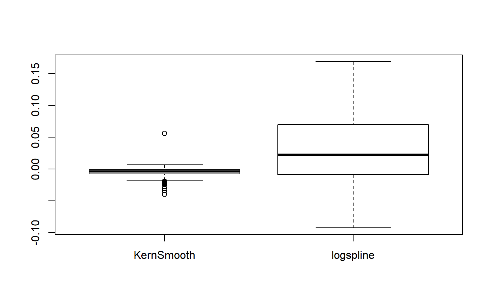

p_map.RdCompute a Bayesian equivalent of the p-value, related to the odds that a parameter (described by its posterior distribution) has against the null hypothesis (h0) using Mills' (2014, 2017) Objective Bayesian Hypothesis Testing framework. It corresponds to the density value at 0 divided by the density at the Maximum A Posteriori (MAP).
p_map(x, precision = 2^10, method = "kernel", ...) p_pointnull(x, precision = 2^10, method = "kernel", ...) # S3 method for stanreg p_map( x, precision = 2^10, method = "kernel", effects = c("fixed", "random", "all"), parameters = NULL, ... ) # S3 method for brmsfit p_map( x, precision = 2^10, method = "kernel", effects = c("fixed", "random", "all"), component = c("conditional", "zi", "zero_inflated", "all"), parameters = NULL, ... )
| x | Vector representing a posterior distribution. Can also be a
|
|---|---|
| precision | Number of points of density data. See the |
| method | Density estimation method. Can be |
| ... | Currently not used. |
| effects | Should results for fixed effects, random effects or both be returned? Only applies to mixed models. May be abbreviated. |
| parameters | Regular expression pattern that describes the parameters that
should be returned. Meta-parameters (like |
| component | Should results for all parameters, parameters for the conditional model or the zero-inflated part of the model be returned? May be abbreviated. Only applies to brms-models. |
Note that this method is sensitive to the density estimation method (see the secion in the examples below).
Strengths: Straightforward computation. Objective property of the posterior distribution.
Limitations: Limited information favoring the null hypothesis. Relates on density approximation. Indirect relationship between mathematical definition and interpretation. Only suitable for weak / very diffused priors.
Makowski D, Ben-Shachar MS, Chen SHA, Lüdecke D (2019) Indices of Effect Existence and Significance in the Bayesian Framework. Frontiers in Psychology 2019;10:2767. doi: 10.3389/fpsyg.2019.02767
Mills, J. A. (2018). Objective Bayesian Precise Hypothesis Testing. University of Cincinnati.
#> p (MAP) = 1.000#> p (MAP) = 0.000library(rstanarm) model <- stan_glm(mpg ~ wt + gear, data = mtcars, chains = 2, iter = 200, refresh = 0)#> Warning: The largest R-hat is 1.09, indicating chains have not mixed. #> Running the chains for more iterations may help. See #> http://mc-stan.org/misc/warnings.html#r-hat#> Warning: Bulk Effective Samples Size (ESS) is too low, indicating posterior means and medians may be unreliable. #> Running the chains for more iterations may help. See #> http://mc-stan.org/misc/warnings.html#bulk-ess#> Warning: Tail Effective Samples Size (ESS) is too low, indicating posterior variances and tail quantiles may be unreliable. #> Running the chains for more iterations may help. See #> http://mc-stan.org/misc/warnings.html#tail-essp_map(model)#> # MAP-based p-value #> #> Parameter | p_MAP #> ------------------- #> (Intercept) | 0.000 #> wt | 0.000 #> gear | 0.885 #>#> # MAP-based p-value #> #> Parameter | p_MAP #> ----------------- #> overall | 0 #>if (FALSE) { library(brms) model <- brms::brm(mpg ~ wt + cyl, data = mtcars) p_map(model) library(BayesFactor) bf <- ttestBF(x = rnorm(100, 1, 1)) p_map(bf) } # \donttest{ # --------------------------------------- # Robustness to density estimation method set.seed(333) data <- data.frame() for (iteration in 1:250) { x <- rnorm(1000, 1, 1) result <- data.frame( "Kernel" = p_map(x, method = "kernel"), "KernSmooth" = p_map(x, method = "KernSmooth"), "logspline" = p_map(x, method = "logspline") ) data <- rbind(data, result) } data$KernSmooth <- data$Kernel - data$KernSmooth data$logspline <- data$Kernel - data$logspline summary(data$KernSmooth)#> Min. 1st Qu. Median Mean 3rd Qu. Max. #> -0.039649 -0.007867 -0.003854 -0.005315 -0.001114 0.056255#> Min. 1st Qu. Median Mean 3rd Qu. Max. #> -0.092188 -0.008938 0.022446 0.027466 0.069449 0.168656# }